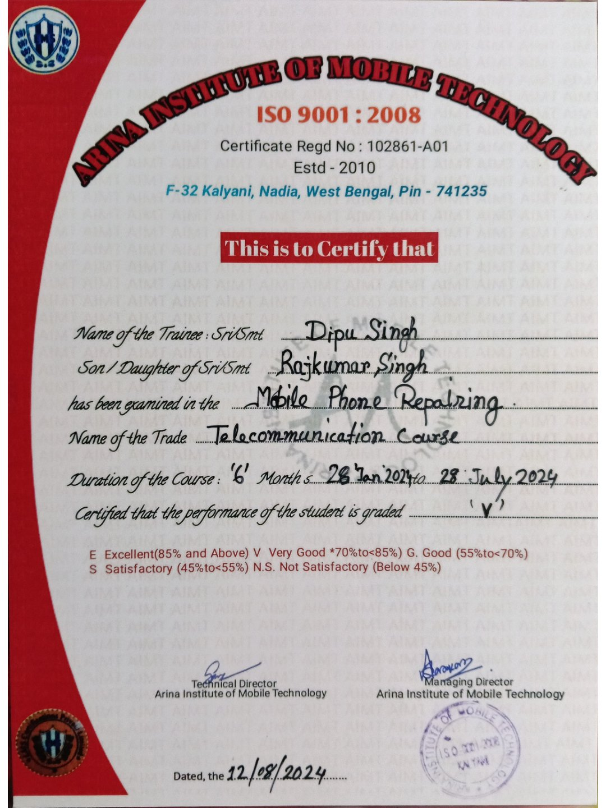

My approach
Listen first. Check carefully. Explain the options. Take approval before starting work. Keep the customer informed.
PERSONAL PROFILE · KALYANI, WEST BENGAL
I’m Dipu Singh. I work in mobile phone repair and technology services. I’m building my work around practical problem-solving, honest communication and helping people understand what their devices need.
Based in Kalyani · B-17 Simanta · Appointments by prior contact
A LITTLE ABOUT ME
I’m developing my career as an independent technician in Kalyani. I completed a six-month Mobile Phone Repairing course in 2024. I believe people should get a clear explanation of the issue, possible options and expected cost before any repair begins.
Listen first. Check carefully. Explain the options. Take approval before starting work. Keep the customer informed.
WHAT I DO
Contact me with the device model or service requirement. Availability, scope and pricing are confirmed after discussion and, where needed, inspection.
Repair enquiries and assistance for display, touch, charging, battery, software and other phone-related issues.
Initial fault checking to understand symptoms and discuss suitable repair options before work is approved.
CCTV installation, servicing and support enquiries for homes and small businesses. Requirements are assessed before confirming the work.
Service availability depends on the device, fault, parts and project requirements. No repair time or outcome is guaranteed before assessment.
TRAINING & LEARNING
I completed a six-month Mobile Phone Repairing course at Arina Institute of Mobile Technology, Kalyani.

The certificate is displayed as supplied. It records course training and is not presented as a government licence or additional qualification.
HOW TO GET IN TOUCH
Share your phone model, issue or CCTV requirement. I’ll discuss the next step with you directly.
Explain the issue or service you need on WhatsApp.
We discuss inspection, availability and the likely next step.
Work and pricing are agreed before proceeding.
CONTACT DIPU
For mobile repair and CCTV service enquiries in Kalyani, contact me directly.
Phone / WhatsApp
8276846320
Location
B-17 Simanta, Kalyani, West Bengal 741235
Please contact before visiting. This is an appointment-based service profile, not a walk-in shop listing.